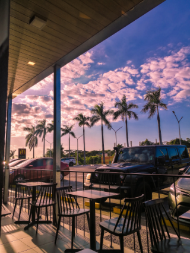
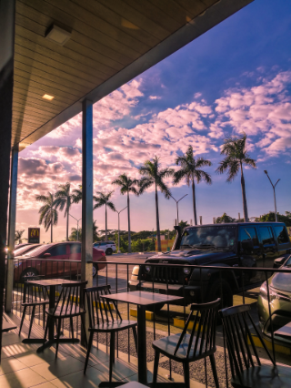
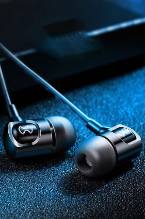

HOBBIES

Hobbies is the activities we take part in to meet new people. Hobbies also helps us bond with friends and family. Hobbies is ways to express yourself in your current interest and activities. Hobbies can also actually even help you discover talents you didn't know you had.
My Hobbies are photography, listening to music, travelling with my bike and going to the place that is worth to go. I love going to different places to relieve stress, escape from my sadness and just being happy and appreciate the environment.
My Hobbies are photography, listening to music, travelling with my bike and going to the place that is worth to go. I love going to different places to relieve stress, escape from my sadness and just being happy and appreciate the environment.